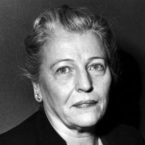

Nhà truyền giáo Sydenstricker - tổ tiên là người Hòa Lan qua Mỹ lập nghiệp - đã sống nhiều năm ở Trung Hoa, năm đó cùng với vợ đương có mang, trở về nghỉ ở Hoa Kỳ. Vì vậy mà Pearl Buck đáng lẽ sanh ở Trung Hoa thì chào đời ở tiểu bang Tây Virginie, ngày mùng 6 tháng 5, năm 1892.
Ba tháng sau ông bà Sydenstricker lại trở về ngôi nhà cũ ở phía Bắc Thượng Hải, trên một ngọn đồi nhìn xuống dùng sông Dương Tử. Ngôi nhà bằng gạch quét vôi, giản dị nhưng đẹp nhờ chung quanh có rất nhiều hoa và phượng vĩ (1). Trong miền chỉ có gia đình ông bà là người da trắng. Sau này Pearl Buck chép lại đời của cha trong truyện L’ange combattant (Thiên thần chiến đấu) và đời cùa mẹ trong truyện LExilée (Người đàn bà bị đày).
Gia đình đó sống được nhiều năm tràn trề hạnh phúc. Em Pearl lớn lên, được người bếp Trung Hoa dạy cho những điều thông thường, và một nhà Nho Trung Hoa, Ông Kung, dạy cho biết chữ Hán; ông này học rộng, rất thích chì cho em những câu cách ngôn, tục ngữ Trung Hoa. Nhưng, tháng 9 năm 1905, sau một cuộc bạo bệnh (dịch tả), ông qui tiên.

Biến cố đó gây cho em nỗi buồn đầu tiên, nhất là làm thay đổi hẳn sự giáo dục của em: em vô trường Tin Lành Thượng Hải. Vô đó, em mới nhận ra rằng mình là một em bé phương Tây sống giữa dân tộc Trung Hoa, và thấy một cuộc sống mới khác hẳn vũ trụ tuổi thơ của em: có những bé gái Trung Hoa, cha mẹ vì nghèo đói, đem bán cho các gia đình giàu có, sau thoát khỏi cảnh tôi đòi bi thảm nhờ được một trung tâm gọi là “Cửa hy vọng” đem về nuôi. Chính tại nơi đó, Pearl đã tiếp xúc với những trẻ vô phước ấy.
Năm mười bảy tuổi, Pearl về Hoa Kỳ tiếp tục sự học. Cô đã biết tiếng Trung Hoa trước khi biết tiếng Anh; đã sống theo lối Trung Hoa, chưa thấy có dây liên lạc gì với Hoa Kỳ cả, mà trái lại, chỉ mong mau tới ngày được trở về Trung Hoa; cô nhớ Trung Hoa như một người bị đày nhớ quê hương vậy.
Năm 1917 cô được mãn nguyện, và ít lâu sau, trong một cuộc tiếp tân thân mật ở tòa Đại sứ Hoa Kỳ, cô gặp một kỹ sư canh nông, John Lessing Buck, vì công việc mà liên lạc thường với hội Truyền giáo Tin Lành. Hai người cưới nhau rồi cùng nhau đi khắp miền Bắc Trung Hoa lúc đó đương hồi loạn lạc.
Bà dạy ở nhiều trường Đại học, đặc biệt là ở Nam Kinh, âu yếm các trẻ em Trung Hoa, hoàn toàn hòa mình vào vũ trụ mà bà đã lựa chọn.
Vì là phụ nữ, sau này bà nhận được sự quan trọng của hôn nhân đối với người Trung Hoa ra sao. Bà viết: “Hôn nhân không bao giờ là một chuyện tầm thường, không quan hệ, mà là một bổn phận đối với đời sống”.
Bà phân tích một cách rất minh bạch những yếu tố làm cho hôn nhân là một sự kiện quan trọng vừa cho xã hội vừa cho gia đình: “Tình vợ chồng dĩ nhiên là tình căn bản trong mọi cuộc đời. Khi vợ chồng mà hòa thuận thì chẳng những đời sống trong gia đình được vui vẻ mà đời sống của dân tộc cũng điều hòa. Trái lại nếu vợ chồng không hòa thuận, thì tai hại lây cả tới đời sống dân tộc.
Vậy hôn nhân, dù là việc riêng tư tới mấy, cũng không phải chỉ là việc của cá nhân’’.
Nhưng bà không ưa nghề truyền giáo. Bà không cho rằng các người Hoa Kỳ và Anh điều khiển các hội truyền giáo có tư cách, đạo đức hơn người Trung Hoa. Bà nhiễm văn hóa, triết học Trung Hoa tới mức thấy phương Tây không hơn được phương Đông.
Một lần bà bảo: “Tôi có xin lỗi dân tộc Trung Hoa bao nhiêu thì cũng chưa đủ, vì người phương Tây chúng ta đã nhân danh Chúa Kitô gởi qua đó những kẻ ngu ngốc, vênh váo, mê tín để truyền cho họ những dị đoan, tín ngưỡng và học thuyết của chúng ta”.
Lần lần bà cảm thấy phải làm một nhiệm vụ mà số mạng đã xui khiến: phải truyền cho phương Tây một hình ảnh vừa khách quan vừa chủ quan của cái xứ mà bà yêu và cứ mỗi năm lại thấy gần gũi nó hơn.
Biết bao người Mỹ và Âu sở dĩ biết được chút gì về tâm hồn và tính tình người Á Đông là nhờ những tiểu thuyết nổi danh khắp thế giới của nữ sĩ tóc đen và mướt, mắt xanh như rong biển đó.
Năm 1923, bài báo đầu tiên của bà đăng trên một tạp chí Hoa Kỳ; năm 1932 bà được giải thưởng Pulitzer (2) và năm 1938 được giải Nobel về văn chương.
Từ khi bắt đầu cầm bút cho tới khi được những giải thưởng đó bà đã chịu bao nhiêu thử thách, tỏ ra biết bao nhiêu can đảm và kiên nhẫn. Tiểu thuyết lớn đầu tiên của bà trong mười một tháng, gởi tới hết nhà xuất bản này tới nhà xuất bản khác, không nhà nào nhận!
Selma Lagerlof, Sigrid Undset cũng là những nữ sĩ quốc tế như Pearl Buck tác phẩm cũng được dịch ra hầu hết các ngôn ngữ, được khắp thế giới thích mà mới đầu cũng bị các nhà xuất bản hất hủi như vậy. Nếu tài của các vị đó không có một cái gì như một tiếng gọi trong thâm tâm, một ma lực quyến rũ không sao chống lại được, ngăn cản được, thì chắc các vị đó đã nghi ngờ giá trị tác phẩm của mình mà chán nản bỏ cây viết rồi.
Cuốn Autant en emporte le vent (Cuốn theo chiều gió) của Margaret Mitchell cũng vậy, bị đa số các nhà xuất bản ở Paris từ chối, mãi sau nhà Gallimard mới chịu nhận.
Có thể như vậy là vì các tác phẩm đó độc đáo. Các người “đọc” bản thảo cho các nhà xuất bản thấy một tác phẩm khác thường có lẽ đã không dám quyết định, hoặc không nhận định được giá trị đặc biệt của nó cho tới khi ông giám đốc văn chương có sáng kiến, có tài linh mẫn đặc biệt, dám in thử xem sao.
Nhà xuất bán John Day in thử tác phẩm đầu của Pearl Buck, sau in thêm mấy truyện khác của bà, tới khi truyện Terre Chinoise (Đất Trung Hoa) – nhan đề nguyên thủy là Good Earth - Đất Lành - ra đời năm 1931 thì độc giả mới hoan nghênh nhiệt liệt, truyện được liệt vào hạng “bán chạy nhất” ở Hoa Kỳ.
Trong cuốn Les mondes que j’ai connus (Những thế giới tôi đã biết), bà kể lần bà được giải Nobel: “Sinclair Lewis đã bảo tôi: “Bà đừng nghe lời người ta mà coi thường giải Nobel. Nó là niềm vui kích thích nhất trong đời nhà văn đấy. Phải tận hưởng từng phút một của buổi lễ, vì sẽ không có kỷ niệm nào đẹp hơn nữa đâu”.
“Nghe lời khuyên đó, tôi lại Stockolm và thấy Sinclair Lewis có lý. Tôi đã được biết nhiều lúc sung sướng trong đời, nhưng ngoài những cái vui luôn luôn thay đổi trong gia đình, thì bốn ngày ở Stockolm năm 1939 đã lưu lại cho tôi một kỷ niệm duy nhất, tuyệt thú”.
Bài diễn văn bà đọc khi lãnh giải có giọng rất tế nhị về chính trị cũng như về tình người.
“Tâu Hoàng Thượng và Hoàng Hậu,
Thưa quý Vị,
Tôi không sao diễn nỗi cảm xúc của tôi khi được nhận vinh dự này. Tôi tin rằng trong sự nghiệp văn chương của tôi, tôi cống hiến không được bao nhiêu mà bây giờ được đền đáp lại nhiều quá. Tôi mong rằng các tác phẩm sau này của tôi sẽ bổ túc một cách xứng đáng những điều mà bây giờ tôi không nói được đủ. Nghĩa là tôi nhận được giải thưởng này đúng theo chủ ý của người phát giải; thưởng là thưởng những công trình sẽ thực hiện, chứ không phải những công trình đã thực hiện. Như vậy, từ nay, những hồi ký về ngày quan trọng này sẽ làm cho ngọn bút của tôi thêm mạnh mẽ và có một phẩm chất đặc biệt.
“Tôi cũng nhận giải thưởng cho xứ sở của tôi nữa, cho Hoa Kỳ. Chúng tôi biết rằng chúng tôi là một dân tộc trẻ, khả năng chưa đạt tới mức sung mãn. Giải thưởng lớn lao này phát cho một nữ sĩ Hoa Kỳ chẳng phải chỉ khuyến khích riêng tôi mà còn khuyến khích tất cả các nhà văn Hoa Kỳ. Tôi muốn thưa thêm rằng ở nước tôi, người ta cho rằng phát giải cho một phụ nữ là một điều quan trọng.
Chư vị đã biết nhận tài năng của nữ sĩ Selma Lagarlof của chư vị (3), và của nhiều phụ nữ khác trong mấy phạm vi khác, nhưng có lẽ chư vị chưa nhận định được hết sự quan trọng của sự phát giải lần này cho một nữ sĩ.
“Tôi ngỏ ít lời hôm nay không phải với tư cách một nhà văn, hoặc một phụ nữ, mà với tư cách một người đàn bà Hoa Kỳ, vì cả nước tôi đều được chung hưởng vinh dự này.
‘‘Tôi sẽ có lỗi với chính tôi, nếu tôi không - với tư cách hoàn toàn cá nhân - nhắc tới dân tộc Trung Hoa mà tôi đã chia xẻ cuộc sống trong biết bao năm. Ở tổ quốc tôi và ở quốc gia đã nuôi tôi (tức Trung Hoa), cách suy tư rất giống nhau, nhất là ở điểm cả hai bên đều yêu quý tự do. Sự giống nhau đó lúc này càng nổi bật lên nữa; Trung Hoa đương chiến đấu cho tự do, sự chiến đẩu đó cao quý nhất.
Tôi chưa bao giờ phục xứ đó như bây giờ, vì toàn dân đã đoàn kết nhau để chống quân xâm lăng kẻ thù chung (4). Tôi biết rằng người ta không làm sao chiếm nước đó được: dân tộc Trung Hoa có cái nhu cầu được tự do: đó là đức căn bản thâm trầm nhất của họ. Thời này còn hơn các thời khác nữa, sự tự do là vật sở hữu quý nhất của loài người. Hai nước chúng ta, Thụy Điển và Hoa Kỳ còn giữ được nó.
Quốc gia tôi còn trẻ và xin nhiệt thành chào quốc gia tự do đáng kính của chư vị”.
Nhưng, lên đến tuyệt đích của danh vọng, Pearl Buck vẫn có một nỗi đau lòng không quên được.
Hồi ở Trung Hoa, bà sinh được một em gái nhỏ, và mới đầu bà mừng rỡ vô cùng. Nhưng rồi bà phải chịu một nỗi khổ tâm ghê gớm: em gái đó bị một bệnh, từ đó thân thể tiếp tục lớn lên mà tinh thần thì không phát triển nữa, đứng yên ở cái mức của một em bốn tuổi. Bà lo lắng không kể xiết, đem con qua Hoa Kỳ nhờ tất cả các danh y chữa chạy mà vô hiệu, rốt cuộc bà phải bỏ cuộc chiến đấu kiệt sức đó; trí khôn của đứa bé không sao tiến hơn được.
Có nhớ lại những trang bà tả tình mẹ thương con trong các cuốn La Mère (Người Mẹ) hoặc L’ Exilée (Người đàn bà bị đày) ta mới hiểu được nỗi đau
đớn của bà ra sao.
Thêm nỗi này nữa: khi biết rằng tình trạng tinh thần của con gái không sao cải thiện được, bà cũng hay một cách chắc chắn rằng bà không thể có con được nữa. Thật tai hại! Do đó mà gia đình bà tan rã. Bà bảo: “Khi một tai nạn như vậy không làm cho vợ chồng gần lại nhau thì nhất định là người ta phải xa nhau”.
Bà ly dị rồi kết hôn với Richard Wash, lúc đó làm giám đốc văn chương cho nhà xuất bản John Day; Richard Wash chính là người đầu tiên nhận thấy giá trị của tiểu thuyết bà gởi tới, và nhiệt thành khuyên nhà John Day nên xuất bản. vẫn tiếp tục đương đầu với thực tế, Pearl Buck hiểu rằng phải quên mình đi mà nghĩ tới người khác, nếu không thì sẽ tuyệt vọng, không sống nổi: bà nhận làm nghĩa mẫu những trẻ người ta dắt tới hết đứa này tới đứa khác, để cho nhà được vui vẻ.
Bà có cái lối phản ứng với nghịch cảnh như vậy: dùng cái thiện mà trị cái ác, phân phát niềm vui đầy đủ, cưu mang những kẻ khốn khổ nhất để vơi nỗi đau khổ của mình. Từ đó bà dùng tác quyền của bà - tác quyền đó rất lớn vì tác phẩm của bà in rất nhiều và có truyện được đưa lên màn ảnh - để dựng một trung tâm kiểu mẫu, lấy tên là Welcome House (Nhà Tiếp đón Niềm nở), nơi đó các trẻ mồ côi hoặc bị cha mẹ bỏ rơi, được bà niềm nở tiếp đón, nuôi nấng, mà sống trong cảnh yên ổn, sung sướng.
Những trẻ em trai gái đó là những trẻ lai không ai muốn nuôi. Pearl Buck khuyến khích các người Hoa Kỳ đem về nuôi. Bà bảo: “Phải, Welcome House rất có ích lợi, dù chỉ là để chứng minh rằng nếu chúng ta chịu khó tìm những cha mẹ nuôi thích hợp cho trẻ thì không có trẻ nào là “không thể làm con nuôi được. Trẻ nào sinh ở Hoa Kỳ cũng có thể tìm được người chịu nhận làm cha mẹ nuôi”.
Nhờ vậy, năm 1940, về ở hẳn tại Pensylvanie bà đã vượt được bao nhiêu khó khăn mà thích nghi với hoàn cảnh mới. Bà bảo: “Đã ngoài bốn mươi, bắt đầu một cuộc sống mới, dù là ngay ở quê hương mình, cũng không phải là dễ; mới đầu, tôi khó nhọc lắm mới bám rễ ở đó được. Nhưng lần lần, mỗi ngày rễ mồi đâm ra và bây giờ thì nó đâm sâu lắm rồi”.
Pearl Buck chăm chú theo dõi các biến đổi trên thế giới rồi ghi lại các bộ mặt của thời đại trong mỗi tác phẩm mới của bà. Màn ảnh đã làm cho bà được đại chúng năm châu biết tới; bà luôn luôn thích ngành đó và hồi bảy chục tuổi, sáng lập một nhà sản xuất phim riêng cho bà để quay phim La grosse vague (Ngọn sóng lớn) ở Nhật Bản.
Bà vẫn tiếp tục thư từ đều đều với các nhân vật đủ mọi giới trong mọi nước, chẳng hạn với bà Alexandre David-Neel (5).
Mặc dầu cách nhau mấy đại dương, dù ở xa nhau mấy ngàn cây số, mà hai bà vẫn thường thư từ với nhau, chắc là để nói về nước Trung Hoa mà cả hai đều yêu quý như nhau (6).
Chú thích:
(1) Fougère, cũng gọi là cây dương xỉ hoặc cây đuôi chồn. Vì lá tựa như đuôi phượng hay đuôi chồn. Đừng lộn với cây phượng mùa hè đầy hoa đỏ, người Pháp gọi là flamboyant.
(2) Một giải thưởng lớn của Hoa Kỳ do Pulitzer (1847 - 1911) một ký giả và chủ báo, thành lập.
[3] Vì Selma Lagerlof là người Thụy Điển
(4) Lúc đó Trung Hoa chống với quân xâm lăng Nhật.
(5) Coi phần II cuốn này.
(6) Pearl Buck đã xuất bản tới nay được 41 tác phẩm.